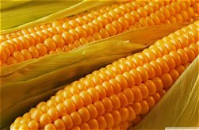
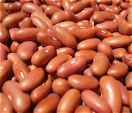

🌱 Crop Information Selector
Select a crop below to display useful information.
Please select a crop to display
information.
AGRICULTURAL CROPS
Common Crops

🌽 Maize
Maize is one of the important food crops grown by farmers.

🫘 Beans
Beans are an important food crop and can contribute to soil fertility.

🍅 Tomatoes
Tomatoes require good sunlight, suitable soil and proper water management.